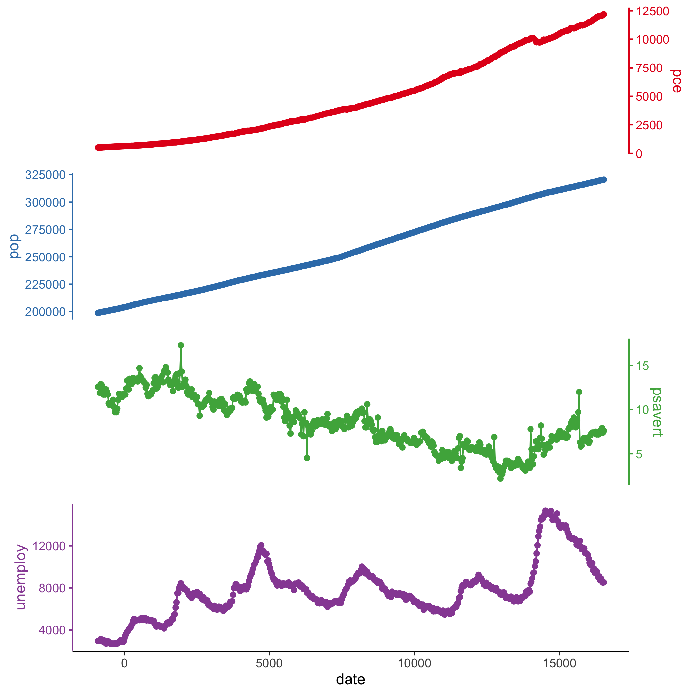

Have you ever wanted to compare multiple panels of line plots that do not share coordinate schemes? These kinds of plots are ubiquitous in the Earth sciences, but there is not an easy way to create them with ggplot facets.
You can install ggstackplot from GitHub with:
if(!requireNamespace("devtools", quietly = TRUE)) install.packages("devtools")
devtools::install_github("KopfLab/ggstackplot")
library(ggstackplot)
# using the built-in economics dataset in ggplot2
ggplot2::economics |>
ggstackplot(
# define shared x axis
x = date,
# define stacked y axes
y = c(pce, pop, psavert, unemploy),
# add a color palette
palette = "Set1"
)
library(ggplot2)
# creating a horizontal stack instead of vertical and using some of the many
# customization features available in ggstackplot
ggplot2::economics |>
ggstackplot(
# define shared y axis
y = date,
# define the stacked x axes with custom axis labels
x = c(
"personal consumption expenditures" = pce,
"population" = pop,
"personal savings rate" = psavert,
"unemployed persons" = unemploy),
# add a different color palette
palette = "Dark2",
# overlay the pce & pop plots and psavert & unemploy plots
overlap = c(1, 0, 1),
# provide a custom plot template
template =
ggplot() +
geom_path() +
theme_stackplot() +
scale_y_date(),
# add plot specific elements
add =
list(
# add points just for 2 plots
`unemployed persons` = geom_point(),
`personal savings rate` = geom_point()
)
)